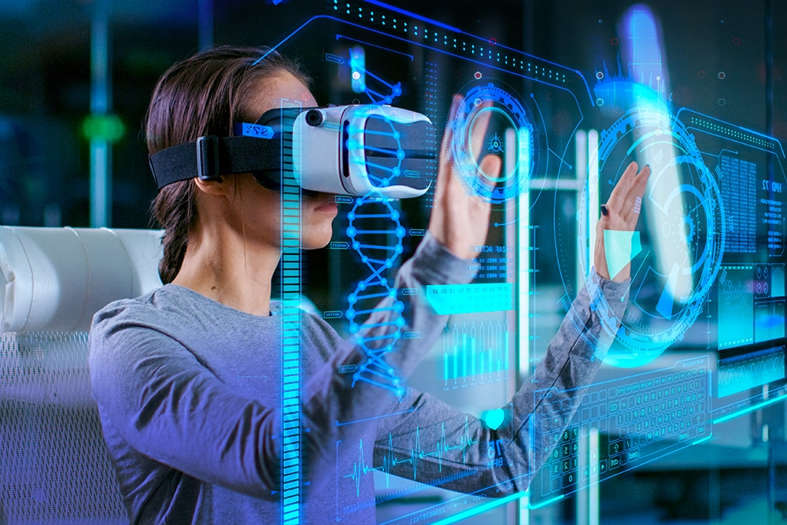

Augmented Reality (AR) is a technology that blends digital information and objects with the real world. It works by overlaying computer-generated images, sounds, and other sensory information onto the user's real-world view, typically through a mobile device or smart glasses. AR creates an interactive experience for users by enhancing their perception of reality, adding layers of digital information to the physical world they are already experiencing.
Pokémon Go is a free smartphone app that combines gaming with the real world. The game uses location tracking and mapping technology to create an ‘augmented reality’ where players catch and train Pokémon characters in real locations.
IKEA uses AR to help shoppers test and visualize products in their own space before making a purchase.
It offers multiple tools for customer needs, like the IKEA Place app that superimposes to-scale models of furniture in real-life rooms or the IKEA home planner that helps people build furniture sets, like kitchen cabinets, to ensure they’re satisfied before placing an order.
Augmented reality can be used in various “entertainment” industries as entertainment covers quite a number of different industries – music, movies, live shows, games – and all of them can benefit from using augmented reality.
AR in eSports – recently, the industry of eSports has been gaining popularity in all parts of the globe. Competitive online gaming has become as fascinating as real sports, and the technology is following it closely with new solutions and unusual implementations. Augmented reality turns eSports shows into interactive experiences allowing the watchers to become participants.
AR in the theater – in this sector, augmented reality can serve not only for entertainment purposes but also for the purposes of accessibility. The possibility to overlay virtual objects over the real environment can be used, for example, for subtitling in various theater shows.
AR on TV – this may seem a bit far-fetched, as television already shows a virtual world, thus adding augmented reality will raise it to the second power. However, some experiments of fusing augmented reality on TV are already being made with the promise of future enhancements. One way of integrating augmented reality in television is adding supplementary information to what is going on the TV screen such as match scores, betting options, and the like.
Digital reality is a term used to describe a range of immersive technologies that blend the physical and digital worlds to create new, enhanced experiences. It includes a variety of technologies such as augmented reality (AR), virtual reality (VR), mixed reality (MR), and extended reality (XR).
Digital reality technologies are increasingly being used in various industries, such as gaming, entertainment, education, and training, as well as in fields such as healthcare, engineering, and architecture. By leveraging these technologies, organizations can provide new and engaging ways for people to interact with information and environments, ultimately enhancing productivity, creativity, and learning.
Virtual reality (VR) refers to a computer-generated simulation of a three-dimensional environment that can be interacted with using specialized equipment, such as a VR headset, controllers, and other accessories. The aim of virtual reality is to provide users with a highly immersive and interactive experience that feels like a real-world environment. This is achieved by simulating a range of sensory experiences, including sight, sound, and sometimes even touch and smell. Users can move around and interact with objects in the virtual world, creating a sense of presence and engagement that is not possible with traditional forms of media. Virtual reality has many potential applications, from gaming and entertainment to education, training, and therapy.
Immersive– a perception of being physically present in a non- physical world
Non immersive- large display but doesn’t surround the user,
Windows- desktop-based VR involves displaying a 3d virtual on regular desktop display without use of any specialized movement tracking environment.
Mixed reality (MR) is an emergent technology that blends virtual reality (VR) and augmented reality (AR). These days, mixed reality describes environments in which real and virtual subjects and objects interact in real time — and in which you can interact with both real and virtual components. This requires a headset that has either a transparent lens or a camera, so that you can still see the real world. Note that the Windows Mixed Reality headset is a VR headset with a camera.